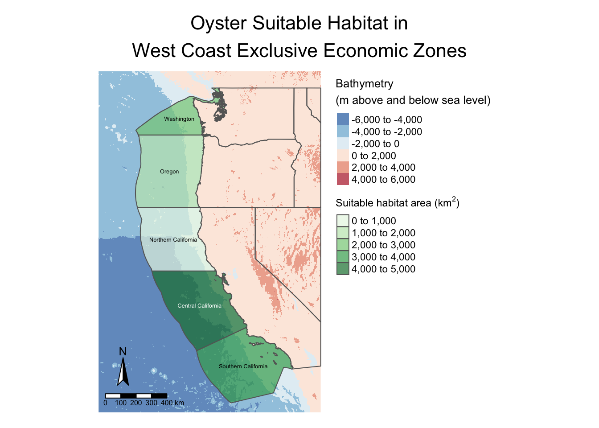

Load packages
library(terra)
library(sf)
library(tidyverse)
library(here)
library(tmap)
library(kableExtra)Prioritizing potential aquaculture
This project takes a look at suitable habitats for marine aquaculture species along the U.S. West Coast, highlighting its potential as a sustainable protein source. Key objectives include:
library(terra)
library(sf)
library(tidyverse)
library(here)
library(tmap)
library(kableExtra)We begin by loading surface economic zone, bathymetry, and sea surface temperature data.
WC_EEZ <- sf::read_sf(here("data", "wc_regions_clean.shp"))
bath <- terra::rast(here("data", "depth.tif"))We want to stack the sea surface temperature (SST) raster files into one raster for ease of calculations.
SST_files <- list.files(
here("data"), pattern = "average",
full.names = TRUE)
SST_stack <- terra::rast(SST_files)
names(SST_stack) <- c("2008", "2009", "2010", "2011", "2012")Now that the data is loaded, we need to ensure each CRS is equal.
if(sf::st_crs(WC_EEZ) == sf::st_crs(4326)) {
print("Coordinate reference systems match")
} else{
warning("Updating coordinate reference systems to match")
# transform data to match
WC_EEZ <- sf::st_transform(WC_EEZ, st_crs(4326))
}[1] "Coordinate reference systems match"if(terra::crs(bath) == terra::crs("EPSG:4326")) {
print("Coordinate reference systems match")
} else{
warning("Updating coordinate reference systems to match")
# transform data to match
bath <- project(bath, crs("EPSG:4326"))
}[1] "Coordinate reference systems match"if(terra::crs(SST_stack) == terra::crs("EPSG:4326")) {
print("Coordinate reference systems match")
} else{
warning("Updating coordinate reference systems to match")
# transform data to match
SST_stack <- terra::project(SST_stack, crs("EPSG:4326"))
}Warning: Updating coordinate reference systems to matchAll have slightly different resolutions, extents, and positions, so we must normalize them before visualizing.
Creating single raster of mean SST will allow us to visualize the data.
SST_mean_K <- terra::mean(SST_stack)We convert the SST from Kelvin to Celsius to directly compare suitable habitats from our source.
SST_mean_C <- SST_mean_K - 273.15Crop the raster extents to match.
bath <- terra::crop(bath, SST_mean_C)Resample the depth data to match the resolution of the SST data using the nearest neighbor approach.
bath <- terra::resample(bath, SST_mean_C, "near")Ensure the depth and SST rasters match in resolution, extent, and coordinate reference systems.
if(all(terra::res(bath) == terra::res(SST_mean_C))) {
if(terra::crs(bath) == terra::crs(SST_mean_C)) {
if(terra::ext(bath) == terra::ext(SST_mean_C)){
print("All match")
}else{
stop("extenet does not match")
}
}else{
stop("CRS does not match")
}
}else{
stop("Resolution does not match")
}[1] "All match"One more check: if it stacks, then they all match!
raster::stack(c(SST_mean_C, bath))class : RasterStack
dimensions : 480, 408, 195840, 2 (nrow, ncol, ncell, nlayers)
resolution : 0.04165905, 0.04165905 (x, y)
extent : -131.9848, -114.9879, 29.99208, 49.98842 (xmin, xmax, ymin, ymax)
crs : +proj=longlat +datum=WGS84 +no_defs
names : mean, depth
min values : 8.217548, -5468.000000
max values : 28.03372, 4218.00000 We can now directly compare and manipulate the data.
Before we create a reproducible workflow, let’s first determine how to create a general workflow for a single species.
To find suitable locations, we can reclassify the data between suitable or unsuitable habitats.
summary(SST_mean_C) mean
Min. : 8.93
1st Qu.:12.40
Median :14.09
Mean :14.17
3rd Qu.:16.06
Max. :28.03
NA's :42349 summary(bath) depth
Min. :-5468
1st Qu.:-4023
Median :-1703
Mean :-1487
3rd Qu.: 881
Max. : 4112 # reclassify erroneous values as NA
SST_rcl <- matrix(c(-Inf, 11, NA,
11, 30, 1,
30, Inf, NA), ncol = 3, byrow = TRUE)
bath_rcl <- matrix(c(-Inf, -70, NA,
-70, 0, 1,
0, Inf, NA), ncol = 3, byrow = TRUE)
SST_mean_C_rcl <- classify(SST_mean_C, rcl = SST_rcl)
bath_rcl <- classify(bath, rcl = bath_rcl)summary(SST_mean_C_rcl) mean
Min. :1
1st Qu.:1
Median :1
Mean :1
3rd Qu.:1
Max. :1
NA's :46450 summary(bath_rcl) depth
Min. :1
1st Qu.:1
Median :1
Mean :1
3rd Qu.:1
Max. :1
NA's :98798 Now that are values are either 1 or NA, we can preform raster algebra to categorize our suitable habitats by determining which cells are both set to 1 between them.
# Create a suitable location raster
suitable_loc <- (SST_mean_C_rcl*bath_rcl)Visualize our suitable locations.
tm_shape(suitable_loc) +
tm_raster(palette = "seagreen") +
tm_compass(size = 2,
position = c("left", "bottom")) +
tm_scale_bar(position = c("left", "bottom")) +
tm_layout(legend.show = FALSE,
main.title = "Suitable Locations of Oyster Habitat",
main.title.size = 1.35,
main.title.position = c("center", "top"))
With our rough estimate of suitable locations we can continue to find the most suitable economic zones for our suitable habitats.
To determine the most suitable Exclusive Economic Zone, we begin by ranking them by total area of suitable habitats.
Select suitable cells within West Coast EEZs.
# Rasterize our economic zones
EEZ_raster <- terra::rasterize(WC_EEZ, suitable_loc, field="rgn_id")
# Categorize our suitable locations raster
EEZ_raster <- (EEZ_raster*suitable_loc)Calculate the area of each cell in kilometers and categorize them.
# Calculate the area of each cell
cell_area <- terra::cellSize(EEZ_raster, unit = "km")
# Categorize the total area of each cell
zone_area <- terra::zonal(cell_area, EEZ_raster, fun="sum", unit="km")
# Visualize area with a table
kable(zone_area, digits = 2,
caption = "Suitable area by exclusive economic zone",
col.names = c("EEZ Region", "Area (km^2)"))| EEZ Region | Area (km^2) |
|---|---|
| 1 | 1074.26 |
| 2 | 178.02 |
| 3 | 4069.57 |
| 4 | 3508.19 |
| 5 | 2378.28 |
Plot our suitable locations.
# Join dataframes to map our eez area with geometries
EEZ_join <- left_join(WC_EEZ, zone_area, by = "rgn_id")
# Create and crop state variable for visualization
us_states <- spData::us_states %>%
filter(NAME %in% c("California", "Washington", "Oregon",
"Nevada", "Idaho", "Montana")) %>%
st_set_crs(4326)
# Grab bbox of previous raster
EEZ_raster_bbox <- st_bbox(EEZ_raster) %>%
st_as_sfc()
# Crop our states
us_states <- st_intersection(us_states, EEZ_raster_bbox)tm_shape(bath) +
tm_raster(palette = "-RdBu",
title = "Bathymetry\n(m above and below sea level)",
alpha = 0.7,
midpoint = 0,
legend.show = TRUE) +
tm_shape(us_states) +
tm_borders() +
tm_shape(EEZ_join, raster.downsample = TRUE) +
tm_polygons(col = "area",
palette = "Greens",
alpha = 0.7,
title = expression("Suitable habitat area (km"^2*")")) +
tm_text("rgn", size = 0.4) +
tm_compass(size = 2,
position = c("left", "bottom")) +
tm_scale_bar(position = c("left", "bottom")) +
tm_layout(legend.outside = TRUE,
frame = FALSE,
main.title = "Oyster Suitable Habitat in\nWest Coast Exclusive Economic Zones",
main.title.size = 1.35,
main.title.position = c("center", "top"))
Next we will pull only the most necessary bits of our code to create a function, easing reproducibility in creating these maps.
suitable_location <- function(min_SST, max_SST, min_depth, max_depth, species_name){
# reclassify erroneous values as NA
SST_rcl <- matrix(c(-Inf, min_SST, NA,
min_SST, max_SST, 1,
max_SST, Inf, NA), ncol = 3, byrow = TRUE)
bath_rcl <- matrix(c(-Inf, min_depth, NA,
min_depth, max_depth, 1,
max_depth, Inf, NA), ncol = 3, byrow = TRUE)
SST_mean_C_rcl <- classify(SST_mean_C, rcl = SST_rcl)
bath_rcl <- classify(bath, rcl = bath_rcl)
# Create a suitable location raster
suitable_loc <- (SST_mean_C_rcl*bath_rcl)
# Rasterize our economic zones
EEZ_raster <- terra::rasterize(WC_EEZ, suitable_loc, field="rgn_id")
# Categorize our suitable locations raster
EEZ_raster <- (EEZ_raster*suitable_loc)
# Calculate the area of each cell
cell_area <- terra::cellSize(EEZ_raster, unit = "km")
# Categorize the total area of each cell
zone_area <- terra::zonal(cell_area, EEZ_raster, fun="sum", unit="km")
# Join dataframes to map our eez area with geometries
EEZ_join <- left_join(WC_EEZ, zone_area, by = "rgn_id")
# Create and crop state variable for visualization
us_states <- spData::us_states %>%
filter(NAME %in% c("California", "Washington", "Oregon",
"Nevada", "Idaho", "Montana")) %>%
st_transform(crs=4326)
# Grab bbox of previous raster
EEZ_raster_bbox <- st_bbox(EEZ_raster) %>%
st_as_sfc()
# Crop our states
us_states <- st_intersection(us_states, EEZ_raster_bbox)
# Plot
tm_shape(bath) +
tm_raster(palette = "-RdBu",
title ="Bathymetry\n(m above and below sea level)",
alpha = 0.7,
midpoint = 0,
legend.show = TRUE) +
tm_shape(us_states) +
tm_borders() +
tm_shape(EEZ_join, raster.downsample = TRUE) +
tm_polygons(col = "area",
palette = "Greens",
alpha = 0.7,
title = expression("Suitable habitat area (km"^2*")")) +
tm_text("rgn", size = 0.4) +
tm_compass(size = 2,
position = c("left", "bottom")) +
tm_scale_bar(position = c("left", "bottom")) +
tm_layout(legend.outside = TRUE,
frame = FALSE,
main.title = paste(species_name,
"Suitable Habitat in\nWest Coast Exclusive Economic Zones"),
main.title.size = 1.35,
main.title.position = c("center", "top"))
}Let’s test our function.
suitable_location(min_SST=11, max_SST=30,
min_depth=-70, max_depth=0,
species_name="Oyster")
It’s the same as before! We confirmed our function is reproducible. Now to try with a new species, the Chinese Mitten crab, with a temperature range of 5-27 C and depth range of 0-25 m.
suitable_location(min_SST=5, max_SST=27,
min_depth=-25, max_depth=0,
species_name="Chinese Mitten Crab")
To create a reproducible workflow, we first created one that works for a single species. We then found variables necessary to replace when creating a map for each different species. With the variables replaced, our function was created. Now we can insert our arguments to create a map of any species that we have the temperature and depth range of.